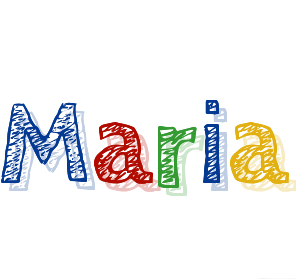

<nav>
  <div class="log-container">
      
  </div>
  <button (click)="openNav()">
    <i class="fas fa-bars"></i>
  </button>
  
</nav>

<div id="mySidenav" class="sidenav">
    <a href="javascript:void(0)" class="closebtn" (click)="closeNav()">&times;</a>
    
    <div class="circle-container">

    </div>
    <h2>SMILE LIKE THIS PLEASE <br>
    Thank you</h2>
  </div>
  
  